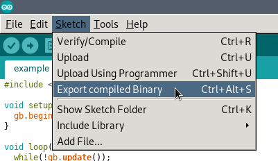
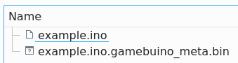
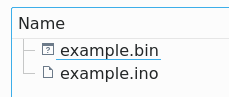
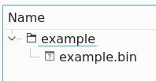
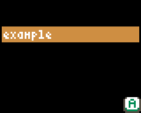
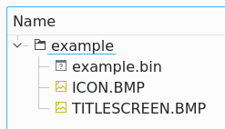
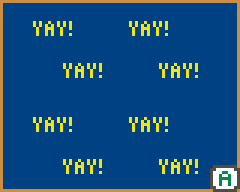
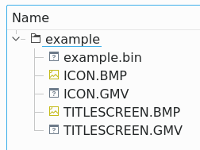
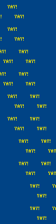
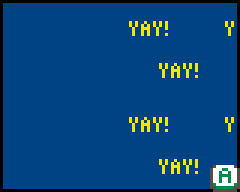

Exportez et partagez votre jeu
Maintenant qu'il est fini, faites en profiter tout le monde !
- Exporter le fichier .bin
- Mettre sur la carte mémoire
- Ajouter icône et aperçu
- Mettre la Création en ligne
Débutant
Comment exporter des jeux depuis l'IDE Arduino vers la carte SD ?
Récupérer le fichier binaire
Vous pouvez facilement récupérer le fichier binaire depuis l'IDE Arduino:
Soit via "Croquis" -> "Exporter les binaires compilées", soit avec le raccourci clavier "Ctrl+Alt+S" (sur Windows).
 Maintenant, le fichier .bin compilé va apparaitre à coté de votre fichier .ino :
 Le fichier binaire se nomme example.ino.gamebuino_meta.bin. C'est assez moche et long non ? Nous allons donc le renommer comme ceci : example.bin.

Maintenant qu'on a le fichier binaire, il faut préparer le dossier que l'on mettra sur la carte SD !
Dossier de la carte SD
Le fichier binaire doit être dans un dossier ayant le même nom (sauf si vous en avez déclaré un autre dans config-gamebuino.h). On devrait avoir quelque chose comme ça :

Placez ce dossier dans votre carte SD, à côté des autres jeux, et votre jeux devrait apparaitre dans le loader. Comme vous pouvez le remarquer, il nous manque une icône et un aperçu.

Ajouter une icône et un aperçu
L'icône et l'aperçu sont ajoutés de la même manière : créez une image BMP avec l'éditeur de votre choix. Vous pouvez utiliser toutes les couleurs que vous souhaitez, mais nous vous suggerons d'utiliser les couleurs de la Palette Gamebuino.
L'icône fait 32 par 32 pixels, et s'appelle ICON.BMP. L'aperçu fait 80 par 64 pixels et s'appelle TITLESCREEN.BMP. Il suffit de les ajouter au dossier du jeu sur la carte SD. Pour illustrer avec un exemple, on a créé une icône et un aperçu avec un fond bleu avec le mot "yay" en jaune dessus.

Bien évidement, c'est un exemple ! Ton jeu devrait avoir une icône / aperçu plus reconnaissable que ça.

Récupérer les fichiers GMV
Vous avez peut-être remarqué qu'il y a des pauses plus longues avant d'afficher l'icône et l'aperçu. C'est dû au fait que la Gamebuino doit convertir les fichiers BMP en GMV (un format interne à la Gamebuino). Si vous placez le fichier GMV dans le dossier de ton jeu, les autres n'auront pas à attendre !
REMARQUE IMPORTANTE : cela ne suffit pas de copier seulement les fichiers GMV, ** il faut copier les fichiers BMP également**. La raison principale est que la console marque ainsi les fichiers BMP automatiquement en tant que "Salut, j'ai un fichier GMV associé !" (en vrai, elle ne parle pas comme ça, mais on imagine).
Quand vous avez terminé, votre dossier à partager devrait ressembler à ça :

Aperçu animés
Les aperçus peuvent être animés ! Pour cela, il suffit de placer chaque image de 80x64 l'une en dessous de l'autre (verticalement) dans le fichier TITLESCREEN.BMP. Le tout sera automatiquement lu à une vitesse de 25 images par secondes. Voici un exemple de 5 images :

Et voici la même chose dans le loader :

Vous avez peut-être remarqué que le temps de chargement est bien plus long ici, c'est parce qu'il y a beaucoup plus d'images à charger. C'est pour cette raison qu'on suggère fortement de fournir les fichiers GMV.
Et maintenant ?
Vous savez tout ! Il ne vous reste plus qu'à partager votre super jeu à toute la communauté ! Un jeu n'a pas besoin d'être terminé pour être partagé, vous pouvez également demander de l'aide pour le terminer, récolter des premiers avis, et publier des mises à jour régulièrement. À vous de jouer !